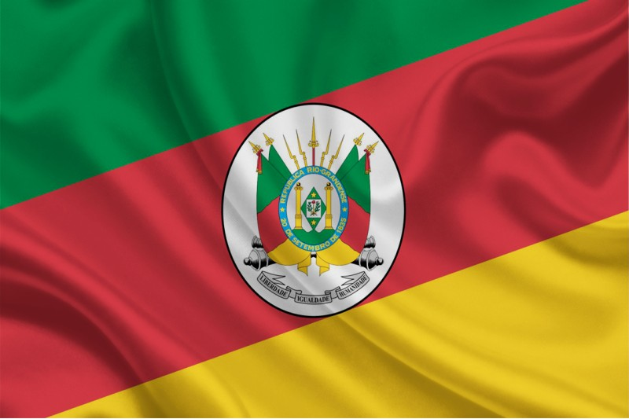
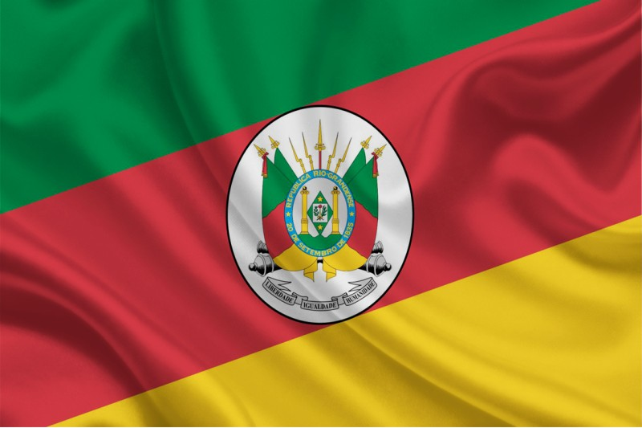

Rio Grande do Sul
𝗢 𝗥𝗶𝗼 𝗚𝗿𝗮𝗻𝗱𝗲 𝗱𝗼 𝗦𝘂𝗹 𝗲𝘀𝘁𝗮́ 𝗹𝗼𝗰𝗮𝗹𝗶𝘇𝗮𝗱𝗼 𝗻𝗼 𝗲𝘅𝘁𝗿𝗲𝗺𝗼 𝘀𝘂𝗹 𝗱𝗼 𝗕𝗿𝗮𝘀𝗶𝗹 𝗲 𝗳𝗮𝘇 𝗳𝗿𝗼𝗻𝘁𝗲𝗶𝗿𝗮 𝗰𝗼𝗺 𝗮 𝗔𝗿𝗴𝗲𝗻𝘁𝗶𝗻𝗮 𝗲 𝗼 𝗨𝗿𝘂𝗴𝘂𝗮𝗶. 𝗘𝗹𝗲 𝗲́ 𝗳𝗼𝗿𝗺𝗮𝗱𝗼 𝗽𝗼𝗿 𝟰𝟵𝟳 𝗺𝘂𝗻𝗶𝗰𝗶́𝗽𝗶𝗼𝘀 𝗲 𝘀𝘂𝗮 𝗮́𝗿𝗲𝗮 𝘁𝗼𝘁𝗮𝗹 𝗲́ 𝗱𝗲 𝟮𝟴𝟭.𝟳𝟬𝟳,𝟭𝟱 𝗸𝗺². 𝗘𝘀𝘁𝗲 𝗲𝘀𝘁𝗮𝗱𝗼 𝘁𝗲𝗺 𝘂𝗺𝗮 𝗽𝗼𝗽𝘂𝗹𝗮𝗰̧𝗮̃𝗼 𝗱𝗲 𝗮𝗽𝗿𝗼𝘅𝗶𝗺𝗮𝗱𝗮𝗺𝗲𝗻𝘁𝗲 𝟭𝟭.𝟰𝟮𝟮.𝟵𝟳𝟯 𝗵𝗮𝗯𝗶𝘁𝗮𝗻𝘁𝗲𝘀¹, 𝗰𝗲𝗿𝗰𝗮 𝗱𝗲 𝟱,𝟰% 𝗱𝗮 𝗽𝗼𝗽𝘂𝗹𝗮𝗰̧𝗮̃𝗼 𝗯𝗿𝗮𝘀𝗶𝗹𝗲𝗶𝗿𝗮, 𝗰𝗼𝗺 𝗶𝘀𝘀𝗼, 𝘀𝗲 𝘁𝗼𝗿𝗻𝗮 𝗼 𝘀𝗲𝘅𝘁𝗼 𝗲𝘀𝘁𝗮𝗱𝗼 𝗺𝗮𝗶𝘀 𝗽𝗼𝗽𝘂𝗹𝗼𝘀𝗼 𝗱𝗼 𝗕𝗿𝗮𝘀𝗶𝗹. 𝗣𝗼𝗿𝘁𝗼 𝗔𝗹𝗲𝗴𝗿𝗲, 𝗮 𝗰𝗮𝗽𝗶𝘁𝗮𝗹, 𝗲́ 𝗼 𝗺𝗮𝗶𝘀 𝗽𝗼𝗽𝘂𝗹𝗼𝘀𝗼 𝗱𝗼 𝗲𝘀𝘁𝗮𝗱𝗼 𝗲 𝘂𝗺 𝗱𝗼𝘀 𝗺𝗮𝗶𝗼𝗿𝗲𝘀 𝗱𝗼 𝗕𝗿𝗮𝘀𝗶𝗹, 𝗰𝗼𝗻𝘁𝗮𝗻𝗱𝗼 𝗮𝘁𝘂𝗮𝗹𝗺𝗲𝗻𝘁𝗲 𝗰𝗼𝗺 𝟭,𝟰𝟴 𝗺𝗶𝗹𝗵𝗮̃𝗼 𝗱𝗲 𝗵𝗮𝗯𝗶𝘁𝗮𝗻𝘁𝗲𝘀. 𝗔 𝗥𝗲𝗴𝗶𝗮̃𝗼 𝗠𝗲𝘁𝗿𝗼𝗽𝗼𝗹𝗶𝘁𝗮𝗻𝗮 𝗱𝗲 𝗣𝗢𝗔 𝗿𝗲𝘀𝗽𝗼𝗻𝗱𝗲 𝗽𝗼𝗿 𝟰𝟬% 𝗱𝗼 𝗣𝗜𝗕 𝗱𝗼 𝗲𝘀𝘁𝗮𝗱𝗼, 𝗲 𝗮 𝗰𝗮𝗽𝗶𝘁𝗮𝗹 𝘁𝗲𝗺 𝘀𝘂𝗮 𝗲𝗰𝗼𝗻𝗼𝗺𝗶𝗮 𝗹𝗶𝗱𝗲𝗿𝗮𝗱𝗮 𝗽𝗲𝗹𝗼 𝘀𝗲𝘁𝗼𝗿 𝘁𝗲𝗿𝗰𝗶𝗮́𝗿𝗶𝗼.
 
